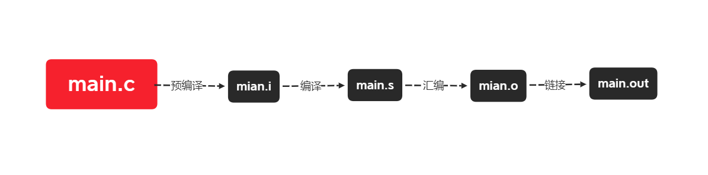

c语言编译流程简单整理以及简单makefile编写
c语言编译流程简单整理以及简单makefile编写
前言: 最近接触了makefile。为了学习makefile，就去了解了部分需要的知识，目前先简单的整理在这里。
c语言编译过程
C语言在编译过程中一共有四个步骤，通过这个四个步骤，才能形成正常可执行的程序。

预处理
首先需要做的就是预处理，预处理顾名思义，预先处理。预处理会将代码中宏定义以及一些其他的东西替换为原本的代码。
1 | |
通过gcc的-E命令可以对.c做预处理，-o是预处理后生成的文件名。生成的.i文件和原本的.c文件相差不是很大，还是c语言的格式，如果打开一个.i文件还是可以看的懂的。
编译
编译就会将整个代码翻译成对应的汇编文件，也就是汇编的代码。
1 | |
调用gcc的-S命令可以将.i文件进行编译，编译完会产生对应.i文件名字的.s文件，这时候的代码就是对应机器的汇编代码了。
汇编
通过汇编，代码就会转变成对应的二进制代码。
1 | |
调用gcc的-C命令可以将.s文件进行编译，编译完会产生对应.o文件名字的.s文件，这时候的文件里面的内容就完全是二进制的代码了。
链接
经过上面的步骤，生成的.o文件还不能正常执行，在.c代码开头包含的头文件啊什么的，还没被加载进来，头文件都已经经过编译了，这时候就需要进行链接，来做最后的组装工作，只有正常的组装后，才可以正常执行。
1 | |
通过上面这行命令，就可以胜场main文件了，如果不指定名字，默认输出a.out。main文件是和a.out是一样的。
简单的makefile编写
了解了基本的编译过程后，单个文件还好说，可以敲几行命令行，可以文件多起来了，这个时候就不好说了，这个时候就需要找到一个解放双手的脚本。
makefile的作用就是对整个工程文件配置编译过程的文件，相当于工程编译配置。通过这个文件，可以快速的编译整个工程，而不需要每次都写那么长的命令。
下面的是简单makefile的写法
基本语法
makefile的基本语法是由三部分组成的
1 | |
目标
目标是命令执行后生成的文件，命令是否执行取决于命令的依赖项是否被改动，如果没改动，就不会执行。
依赖
目标生成时需要的依赖文件。
命令
命令就是生成目标文件时所需要执行的命令。
编译一个程序的时候，我们可以这么写
1 | |
这样的话，执行make时就可以生成可执行文件main.out。
这就是makefile的最基本使用。
两个常用函数
当原文件多了时，我们当然不希望一次性输入大量的原文件名字。makefile提供两个函数来帮我们简化这个过程。
- wildcard 我们可以将所有文件赋值给一个变量，上面的函数会将当前目录下所有后缀为.c的文件赋值给SRC。
1
SRC = $(wildcard ./*.c) - patsubst上面这行代码的意思是将SRC中的.c替换为.o赋值给OBJ。
1
OBJ = $(patsubst %.c, %.o, $(SRC))
有了上面两个函数，我们就可以这样写了。
1 | |
这里还有一些常用变量可以简化代码
- $@:表示目标
- $<:依赖中第一个条件
- $^:依赖中所有文件
有了上面这些变量后，就可以简化成下面这样了。
1 | |
THE END:
目前先整理这样，等继续学习后再来完善makefile部分的语法。
本博客所有文章除特别声明外，均采用 CC BY-SA 4.0 协议 ，转载请注明出处！